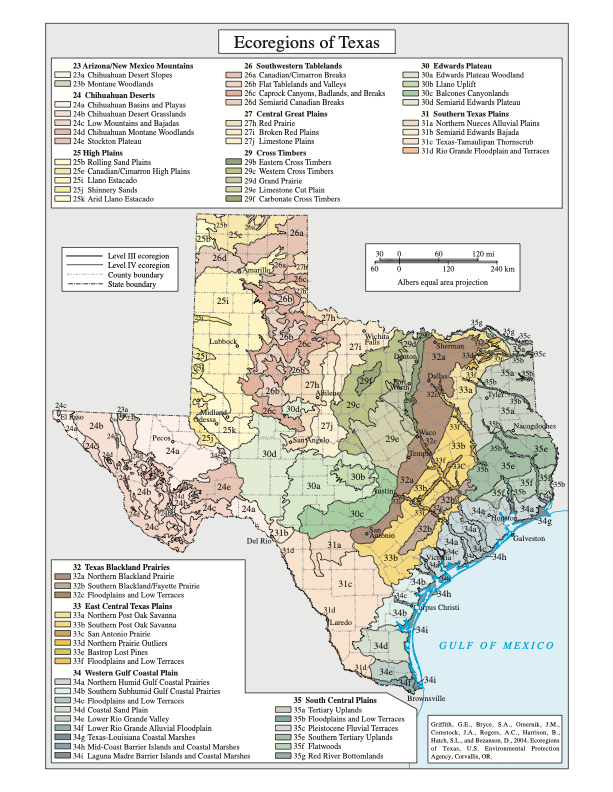

Result
Submit an address to view the selected map layer at that location.
Public Tool
Enter a U.S. address, choose the state, and get the matched latitude, longitude, and EPA terrestrial ecoregion levels.
Submit an address to view the selected map layer at that location.
Live boundary map
This map stacks a neutral road map at the bottom, EPA Level IV colors and boundaries in the middle, and road and town labels on top. Search above to center the map on an address, or pan, zoom, and select a region.
Optional layers are off by default. Turn on one or more with the map control. The most recently enabled layer and its color guide move to the first position.
Enable Geology to list the rock-unit colors visible in the current map.
Brightness describes terrain illumination—not elevation, geology, or land-cover class.
Enable Aquifers to list the aquifer colors visible in the current map.
Includes domestic, public-supply, irrigation, stock, commercial, industrial, and other listed uses; excludes monitoring, unused, unknown, and plugged records.
Loading all current Level IV regions and their map colors…
Map coverage: EPA ecoregions, USGS landforms, and USDA soils cover the continental United States; general geology and aquifers are Texas-only. The dedicated Carrizo–Wilcox layer covers its published U.S. extent in Texas, Louisiana, and Arkansas. Its documented-use well layer is Texas-only and does not identify every parcel or water customer. No Mexican extent is shown because the sources reviewed map the named system only to the international border. Basemap, roads, and place labels © Esri, HERE, Garmin, OpenStreetMap contributors, and the GIS user community. Thematic layers are credited in the source guide.
Texas reference map
This EPA map shows the state’s nested Level III and Level IV ecoregions—the same classification system used by the lookup above.

This page does not use a database, does not write to browser storage, and does not intentionally log submitted addresses.
Addresses are sensitive. Use a nearby intersection or landmark if exact-house precision is not needed.
The lookup uses public map services and returns EPA ecoregion attributes when the coordinate intersects a mapped polygon.
Address to coordinate
The request includes forStorage=false. The selected state is included to reduce ambiguous address matches.
Coordinate to ecoregion
The coordinate is checked against EPA terrestrial ecoregion polygons, with Level IV used first when available.
Level IV color guide
The national renderer supplies colors for all 968 current Level IV regions. The guide uses those same colors as the interactive map.
Mapped rock units
Rock-unit polygons derived from the Texas Geologic Atlas dataset. Colors on this page are a readable web palette, not the printed atlas palette.
Multidirectional hillshade
A terrain visualization derived from the national elevation model. It shows form, not named landform boundaries.
Major and minor aquifer boundaries
Statewide aquifer extents are approximate and intended for regional reference, not site-specific groundwater determinations.
Interstate aquifer extent
Texas outcrop and confined extent come from TWDB; Louisiana outcrop units come from the USGS Carrizo–Wilcox framework; Arkansas follows USGS SIR 2014–5149, where Carrizo and Wilcox are named separately. State classifications do not form one falsely seamless polygon.
Carrizo and Wilcox mapped separately
The Carrizo band is generalized from figure 3; the Wilcox outcrop follows the USGS State Geologic Map Compilation. Use the original report for detailed hydrogeologic interpretation.
Soil map-unit polygons
The official SSURGO web service supplies neighborhood-scale soil boundaries; Web Soil Survey remains the authoritative tool for reports and interpretations.
EPA ecoregions are nested from broad continental patterns to finer local ecological areas.
The largest ecological zones, shaped by broad patterns of climate, landforms, vegetation, and ecosystems.
Subdivisions of Level I that narrow the map by more specific climate, geology, terrain, and vegetation patterns.
The scale that is often easiest to recognize by name, describing a meaningful regional ecological landscape.
The finest mapped subdivision, reflecting more local differences in soils, terrain, vegetation, and land use.